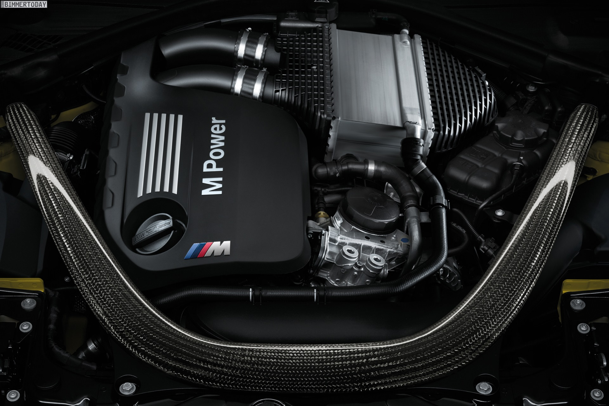

Professionelles Tuning für mehr Leistung und Individualität

Neben Wartung und Reparatur bieten wir auch professionelles Fahrzeugtuning und individuelle Optimierungen an. Ziel ist es, Leistung, Fahrkomfort und Optik Ihres Fahrzeugs zu verbessern – immer unter Berücksichtigung von Sicherheit und gesetzlicher Zulassung.
So erhalten Sie ein Fahrzeug, das perfekt zu Ihren Anforderungen passt – leistungsstark, sicher und zulassungskonform.
Unsere Fachkräfte verfügen über umfangreiche Erfahrung im Bereich Fahrzeugtuning und Performance-Optimierung.
Mit moderner Diagnosetechnik und professionellen Werkzeugen führen wir alle Optimierungen präzise durch.
Wir planen Umbauten effizient und sorgen für eine schnelle Umsetzung Ihrer Fahrzeugoptimierung.